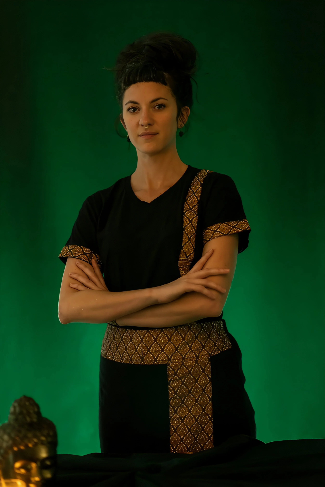

El mapa de un alma
con muchos caminos
Psicóloga, escritora, masajista y exploradora. Todo forma parte de un mismo impulso: la curiosidad por lo que hay dentro.

Ciencia que mira
con ternura
Estoy cursando el Máster en Psicología General Sanitaria con especialización en gerontología y enfoques pro-aging de la salud mental.
Mi trabajo nace de una convicción sencilla: cada etapa de la vida merece atención, cuidado y curiosidad. El envejecimiento no es un error del destino, sino uno de sus capítulos más ricos —y la psicología es la herramienta para habitarlo con plenitud.
Me interesa especialmente la intersección entre el envejecimiento y la salud digital: cómo las pantallas, las redes y la sobreestimulación tecnológica afectan al bienestar emocional en todas las edades, y con especial intensidad en las personas mayores y en quienes las acompañan.
«Soy Anna Oromi, psicóloga en formación, escritora,
masajista y creadora de oráculos.
Todo nace del mismo impulso: la curiosidad
por lo que vive dentro de cada persona.»
Berlín como espejo
Vivo en Berlín: una ciudad que ha moldeado en mí una mirada múltiple. El rigor de la tradición académica germana, la energía creativa de una metrópolis en perpetuo movimiento, y la distancia reflexiva que da el exilio voluntario.
Trabajar desde Berlín me permite atender a personas en español, catalán y alemán, y mantener una perspectiva intercultural que enriquece cada proceso terapéutico.
Creo que los mejores terapeutas son quienes también han aprendido a perderse —y a encontrarse— en territorios desconocidos.
La curiosidad como método
Alicia no cayó por el agujero por accidente. Cayó porque algo la llamó desde dentro. Esa es, para mí, la metáfora perfecta del trabajo psicológico: no se trata de corregir errores, sino de seguir la curiosidad hasta sus últimas consecuencias.
Mi enfoque es integrador. Combino herramientas de la psicología clínica con sensibilidad hacia el cuerpo, la creatividad y lo simbólico. Porque el ser humano no cabe en una sola disciplina.
Trabajo con la convicción de que conocerse a una misma es el mayor acto de valentía —y también el más transformador.


Más allá de la consulta
La psicología es mi hogar. Pero tengo otros mundos que también me hablan —y que me enseñan a ser mejor terapeuta.
✍️ Escritora y editora
Autora biográfica, correctora y prologuista. La escritura es el primer espacio donde aprendí a escuchar las historias de otros.
Ver mis obras →🌿 Masajista holística
Sesiones Almasaje que combinan masaje californiano, reflexología y arteterapia. El cuerpo sabe cosas que la mente tarda años en procesar.
Sobre Almasaje →🃏 Creadora de oráculos
Luz o Cruz: un sistema de cartas para la exploración interior, inspirado en la sabiduría de mi tía-abuela monja que vivió 103 años.
Conocer el oráculo →Si algo de todo esto resuena contigo,
me alegra que hayas llegado hasta aquí.
No importa desde qué puerta entres —la psicología, el cuerpo, las palabras o las cartas—. Todas llevan al mismo lugar.
Escribirme →